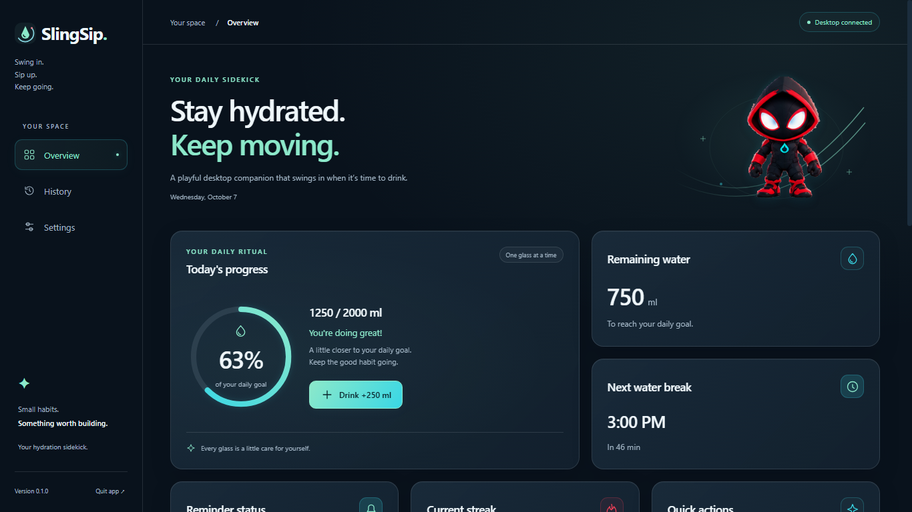
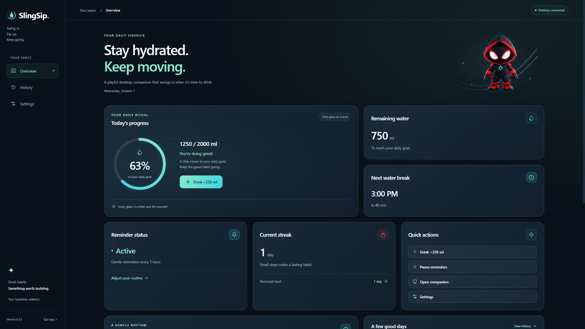
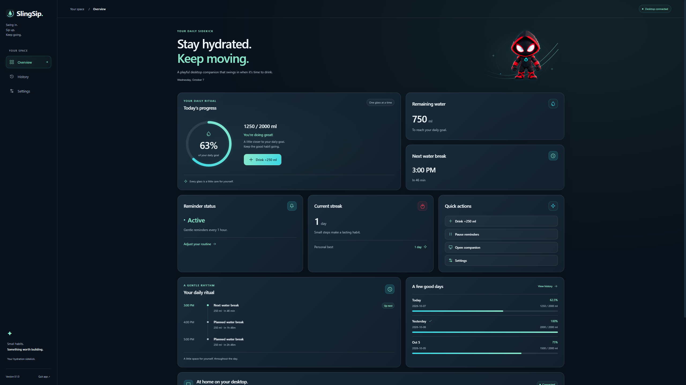
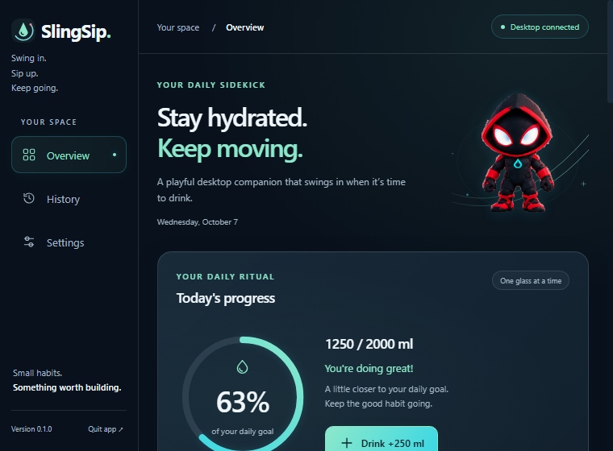
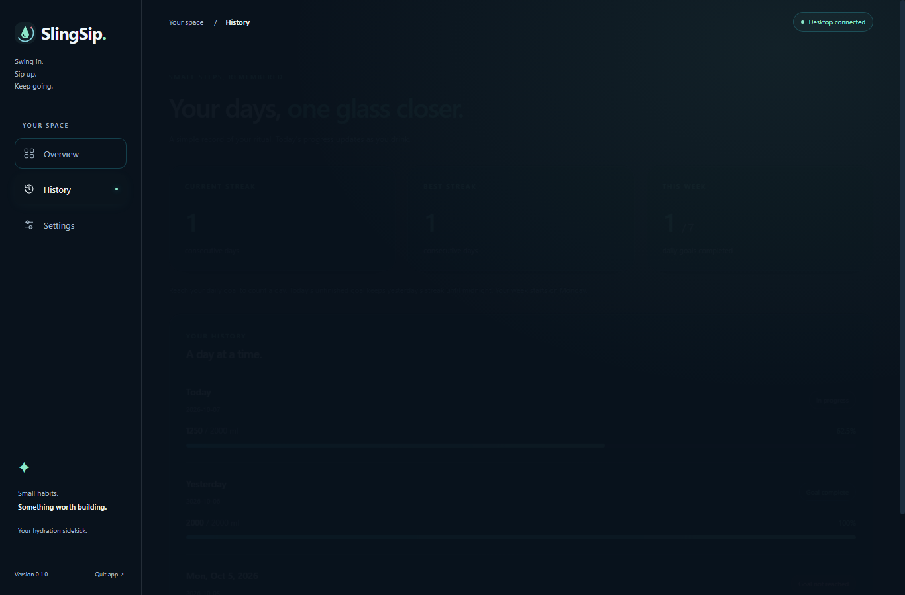
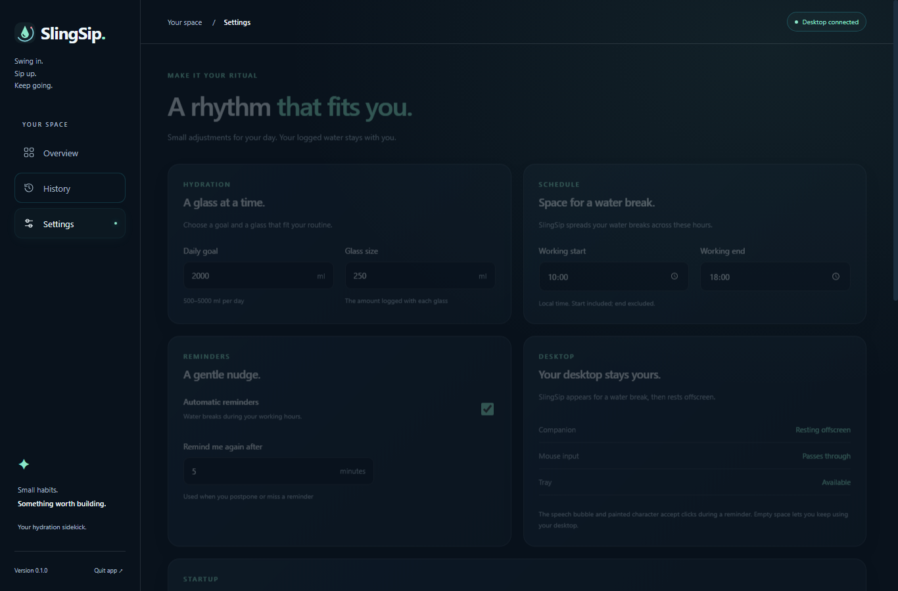
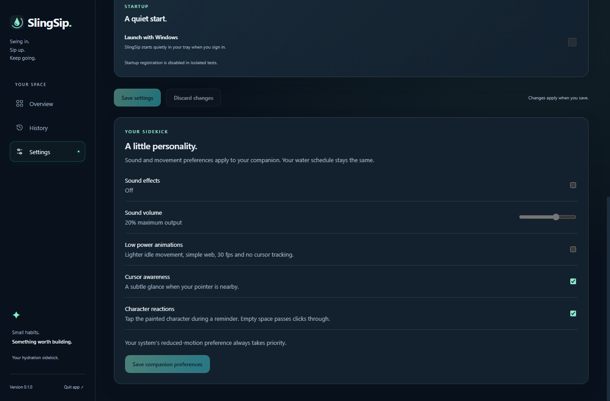
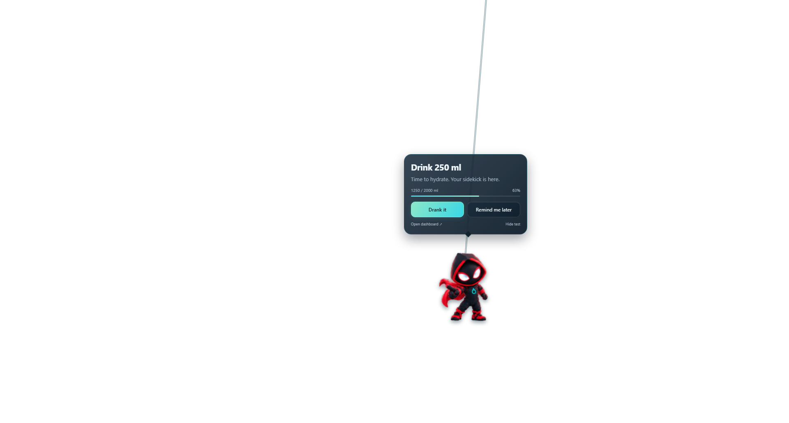
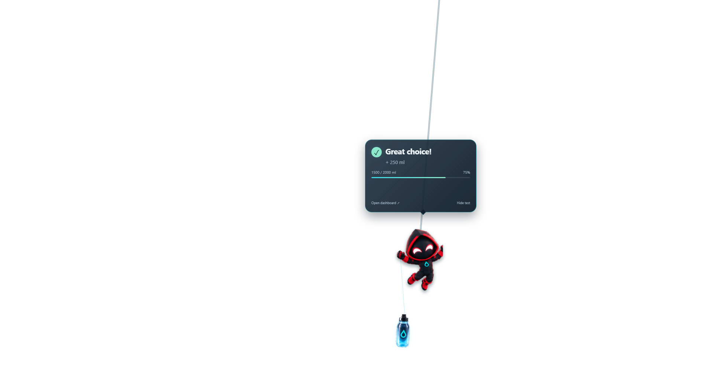
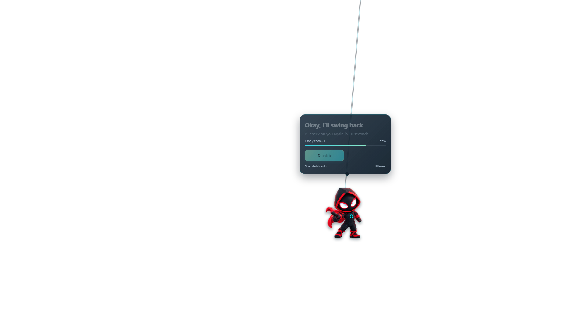
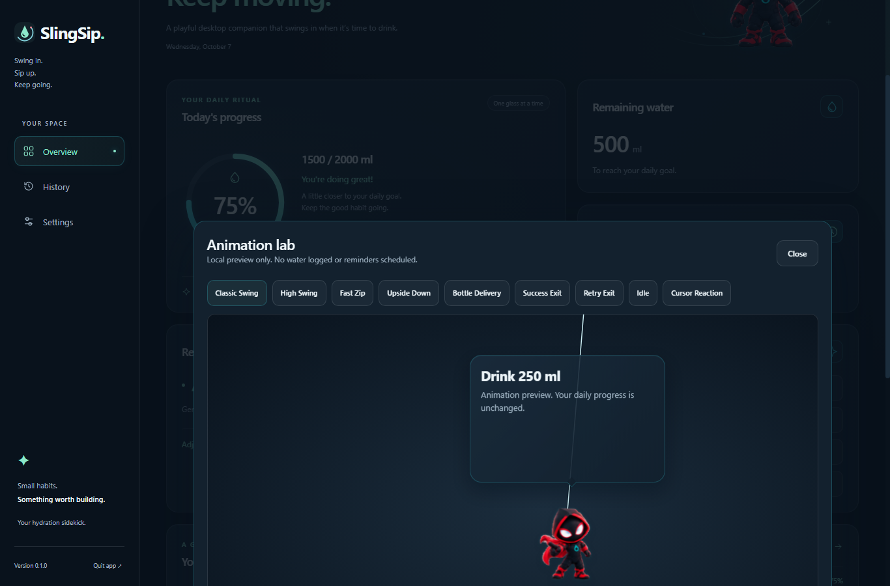
Native Angular + Electron captures from an isolated test profile. Click to view full resolution. Desktop alpha is shown over a checker pattern here; the application remains transparent.










